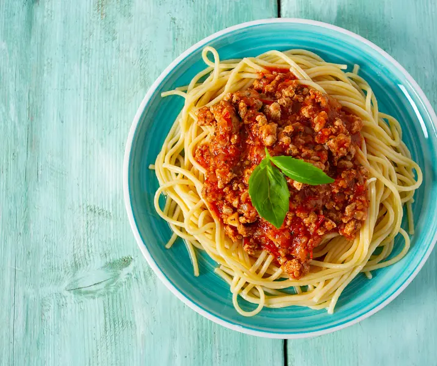

Una receta clasica de Bolonia, Italia
Historia de la receta
La salsa bolognesa nacio en la ciudad de Bolonia al norte de Italia.
Ingredientes
Para los fideos
- 500g de fideos (tallarines o spaguettis).
- Agua y sal gruesa.
Para la salsa.
- 500g de carne picada.
- 1 cebolla y 1 zanahoria.
- 2 dientes de ajo.
- 700g de pure de tomates.
- Medio vaso de vino tinto.
- 2 cucharadas de aceite.
- 1 hoja de laurel, oregano, sal y pimienta.
- Queso rallado para servir.
Preparacion
La salsa
- Dorar en aceite la cebolla, la zanahoria y el ajo picados.
- Agregar la carne y dorarla.
- Sumar el vino y dejar que se evapore.
- Sumarle el pure de tomate, el laurel, la sal, la pimienta y el oregano.
- Cocinar a fuego bajo durante 40 minutos revolviendo de vez en cuando.
Los fideos
- Hervir agua con sal gruesa.
- Cocinar los fideos el tiempo que indica el paquete (De 8 a 10 minutos usualmente).
- Colocarlos y servirlos con la salsa por encima y queso rallado.
Asi se ve la receta finalizada:

Video explicativo de la receta:
Origen de la receta:
Zona de procedencia
Recetas similares que tambien pueden gustarte:
- Informacion de contacto: